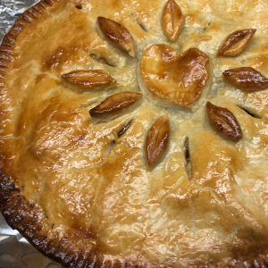

Apple Pie

A delicious homemade apple pie!
There's nothing like an dessert for the tea time.
Let's cook an amazing homemade apple pie the easily!
Ingredients:
- 3/4 cup white sugar
- 2 tablespoons all-purpose flour
- 1/2 tablespoon ground cinammon
- 1/4 teaspoon ground nutmeg
- 1/2 teaspoon lemon zest
- 7 cups thinly sliced apples
- 2 teaspoons lemon juice
- 1 tablespoon butter
- 1 recipe pastry for a 9-inch double crust pie
- 4 tablespoons milk (Optional)
Steps:
- Step 1: Preheat oven to 425 degrees F (220 degrees C).
- Step 2: Mix togheter the sugar, flour, cinammon, nutmeg and lemon peel.
- Step 3: Line one crust in a 9-inch deep-dish pie pan. Layer 1/3 of apples into pie crust. Sprinkle with sugar mixture and repeat until done. Sprinkle with lemon juice and dot with butter.
- Step 4: Place second pie crust on top of filling and flute the edges. Cut vents in top crust and brush with milk for a glazed appearance if desired.
- Step 5: Bake at 425 degrees F (220 degrees C) for 40 to 50 minutes.